In the high-level design, the entire system is broken down in two parts: video uploading flow and video streaming flow. In this section, we will refine both flows with important optimizations and introduce error handling mechanisms.
When you record a video, the device (usually a phone or camera) gives the video file a certain format. If you want the video to be played smoothly on other devices, the video must be encoded into compatible bitrates and formats. Bitrate is the rate at which bits are processed over time. A higher bitrate generally means higher video quality. High bitrate streams need more processing power and fast internet speed.
Video transcoding is important for the following reasons:
•Raw video consumes large amounts of storage space. An hour-long high definition video recorded at 60 frames per second can take up a few hundred GB of space.
•Many devices and browsers only support certain types of video formats. Thus, it is important to encode a video to different formats for compatibility reasons.
•To ensure users watch high-quality videos while maintaining smooth playback, it is a good idea to deliver higher resolution video to users who have high network bandwidth and lower resolution video to users who have low bandwidth.
•Network conditions can change, especially on mobile devices. To ensure a video is played continuously, switching video quality automatically or manually based on network conditions is essential for smooth user experience.
Many types of encoding formats are available; however, most of them contain two parts:
•Container: This is like a basket that contains the video file, audio, and metadata. You can tell the container format by the file extension, such as .avi, .mov, or .mp4.
•Codecs: These are compression and decompression algorithms aim to reduce the video size while preserving the video quality. The most used video codecs are H.264, VP9, and HEVC.
Transcoding a video is computationally expensive and time-consuming. Besides, different content creators may have different video processing requirements. For instance, some content creators require watermarks on top of their videos, some provide thumbnail images themselves, and some upload high definition videos, whereas others do not.
To support different video processing pipelines and maintain high parallelism, it is important to add some level of abstraction and let client programmers define what tasks to execute. For example, Facebook’s streaming video engine uses a directed acyclic graph (DAG) programming model, which defines tasks in stages so they can be executed sequentially or parallelly [8]. In our design, we adopt a similar DAG model to achieve flexibility and parallelism. Figure 14-8 represents a DAG for video transcoding.
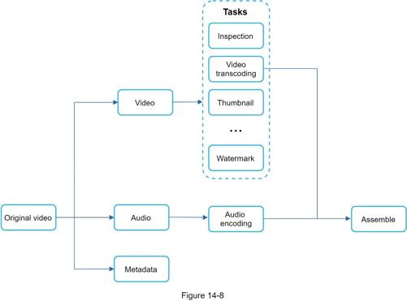
In Figure 14-8, the original video is split into video, audio, and metadata. Here are some of the tasks that can be applied on a video file:
•Inspection: Make sure videos have good quality and are not malformed.
•Video encodings: Videos are converted to support different resolutions, codec, bitrates, etc. Figure 14-9 shows an example of video encoded files.
•Thumbnail. Thumbnails can either be uploaded by a user or automatically generated by the system.
•Watermark: An image overlay on top of your video contains identifying information about your video.
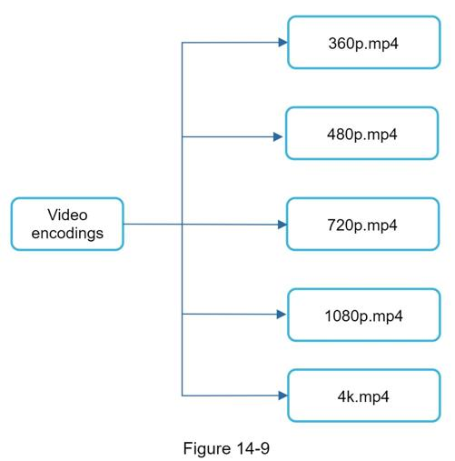
The proposed video transcoding architecture that leverages the cloud services, is shown in Figure 14-10.
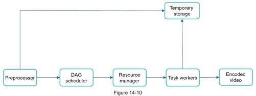
The architecture has six main components: preprocessor, DAG scheduler, resource manager, task workers, temporary storage, and encoded video as the output. Let us take a close look at each component.
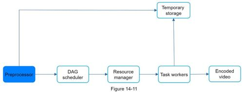
The preprocessor has 4 responsibilities:
1. Video splitting. Video stream is split or further split into smaller Group of Pictures (GOP) alignment. GOP is a group/chunk of frames arranged in a specific order. Each chunk is an independently playable unit, usually a few seconds in length.
2. Some old mobile devices or browsers might not support video splitting. Preprocessor split videos by GOP alignment for old clients.
3. DAG generation. The processor generates DAG based on configuration files client programmers write. Figure 14-12 is a simplified DAG representation which has 2 nodes and 1 edge:
This DAG representation is generated from the two configuration files below (Figure 14-13):
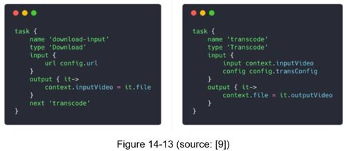
4. Cache data. The preprocessor is a cache for segmented videos. For better reliability, the preprocessor stores GOPs and metadata in temporary storage. If video encoding fails, the system could use persisted data for retry operations.
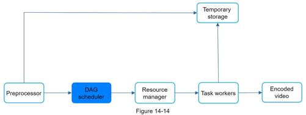
The DAG scheduler splits a DAG graph into stages of tasks and puts them in the task queue in the resource manager. Figure 14-15 shows an example of how the DAG scheduler works.
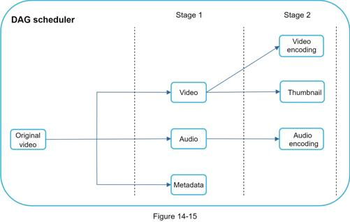
As shown in Figure 14-15, the original video is split into 2 stages: Stage 1: video, audio, and metadata. The video file is further split into two tasks in stage 2: video encoding and thumbnail. The audio file requires audio encoding as part of the stage 2 tasks.
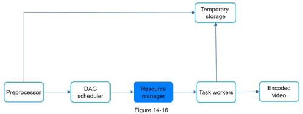
The resource manager is responsible for managing the efficiency of resource allocation. It contains 3 queues and a task scheduler as shown in Figure 14-17.
•Task queue: It is a priority queue that contains tasks to be executed.
•Worker queue: It is a priority queue that contains worker utilization info.
•Running queue: It contains info about the currently running tasks and workers running the tasks.
•Task scheduler: It picks the optimal task/worker, and instructs the chosen task worker to execute the job.
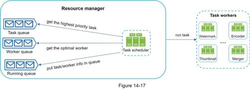
The resource manager works as follows:
•The task scheduler gets the highest priority task from the task queue.
•The task scheduler gets the optimal task worker to run the task from the worker queue.
•The task scheduler instructs the chosen task worker to run the task.
•The task scheduler binds the task/worker info and puts it in the running queue.
•The task scheduler removes the job from the running queue once the job is done.
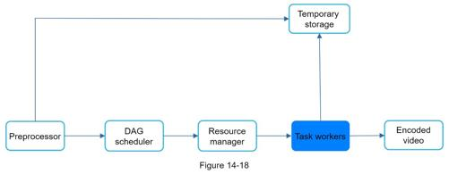
Task workers run the tasks which are defined in the DAG. Different task workers may run different tasks as shown in Figure 14-19.
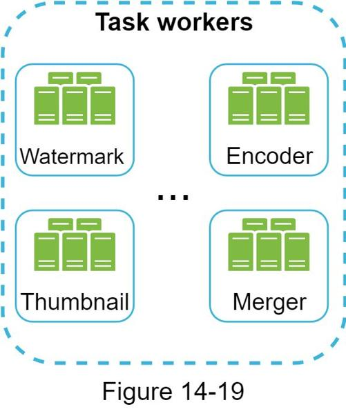
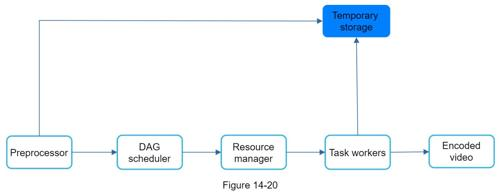
Multiple storage systems are used here. The choice of storage system depends on factors like data type, data size, access frequency, data life span, etc. For instance, metadata is frequently accessed by workers, and the data size is usually small. Thus, caching metadata in memory is a good idea. For video or audio data, we put them in blob storage. Data in temporary storage is freed up once the corresponding video processing is complete.
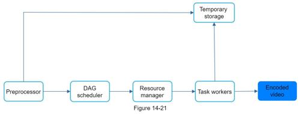
Encoded video is the final output of the encoding pipeline. Here is an example of the output: funny_720p.mp4.
At this point, you ought to have good understanding about the video uploading flow, video streaming flow and video transcoding. Next, we will refine the system with optimizations, including speed, safety, and cost-saving.
Uploading a video as a whole unit is inefficient. We can split a video into smaller chunks by GOP alignment as shown in Figure 14-22.
This allows fast resumable uploads when the previous upload failed. The job of splitting a video file by GOP can be implemented by the client to improve the upload speed as shown in Figure 14-23.
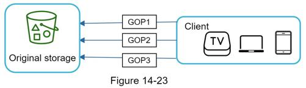
Another way to improve the upload speed is by setting up multiple upload centers across the globe (Figure 14-24). People in the United States can upload videos to the North America upload center, and people in China can upload videos to the Asian upload center. To achieve this, we use CDN as upload centers.
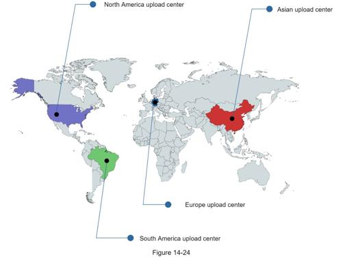
Achieving low latency requires serious efforts. Another optimization is to build a loosely coupled system and enable high parallelism.
Our design needs some modifications to achieve high parallelism. Let us zoom in to the flow of how a video is transferred from original storage to the CDN. The flow is shown in Figure 14-25, revealing that the output depends on the input of the previous step. This dependency makes parallelism difficult.
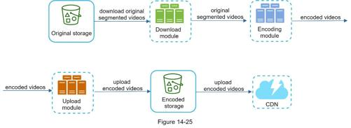
To make the system more loosely coupled, we introduced message queues as shown in Figure 14-26. Let us use an example to explain how message queues make the system more loosely coupled.
•Before the message queue is introduced, the encoding module must wait for the output of the download module.
•After the message queue is introduced, the encoding module does not need to wait for the output of the download module anymore. If there are events in the message queue, the encoding module can execute those jobs in parallel.
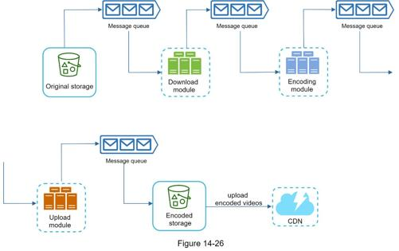
Safety is one of the most important aspects of any product. To ensure only authorized users upload videos to the right location, we introduce pre-signed URLs as shown in Figure 14-27.
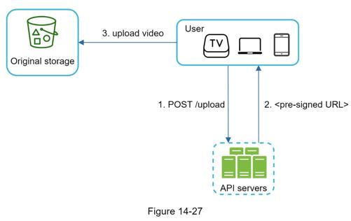
The upload flow is updated as follows:
1. The client makes a HTTP request to API servers to fetch the pre-signed URL, which gives the access permission to the object identified in the URL. The term pre-signed URL is used by uploading files to Amazon S3. Other cloud service providers might use a different name. For instance, Microsoft Azure blob storage supports the same feature, but call it “Shared Access Signature” [10].
2. API servers respond with a pre-signed URL.
3. Once the client receives the response, it uploads the video using the pre-signed URL.
Many content makers are reluctant to post videos online because they fear their original videos will be stolen. To protect copyrighted videos, we can adopt one of the following three safety options:
•Digital rights management (DRM) systems: Three major DRM systems are Apple FairPlay, Google Widevine, and Microsoft PlayReady.
•AES encryption: You can encrypt a video and configure an authorization policy. The encrypted video will be decrypted upon playback. This ensures that only authorized users can watch an encrypted video.
•Visual watermarking: This is an image overlay on top of your video that contains identifying information for your video. It can be your company logo or company name.
CDN is a crucial component of our system. It ensures fast video delivery on a global scale. However, from the back of the envelope calculation, we know CDN is expensive, especially when the data size is large. How can we reduce the cost?
Previous research shows that YouTube video streams follow long-tail distribution [11] [12]. It means a few popular videos are accessed frequently but many others have few or no viewers. Based on this observation, we implement a few optimizations:
1. Only serve the most popular videos from CDN and other videos from our high capacity storage video servers (Figure 14-28).
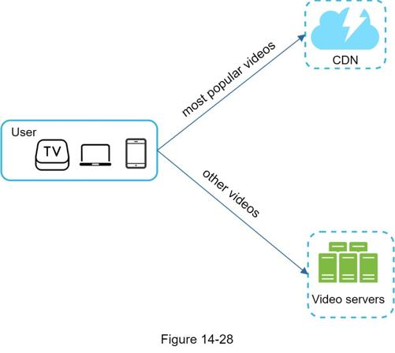
2. For less popular content, we may not need to store many encoded video versions. Short videos can be encoded on-demand.
3. Some videos are popular only in certain regions. There is no need to distribute these videos to other regions.
4. Build your own CDN like Netflix and partner with Internet Service Providers (ISPs). Building your CDN is a giant project; however, this could make sense for large streaming companies. An ISP can be Comcast, AT&T, Verizon, or other internet providers. ISPs are located all around the world and are close to users. By partnering with ISPs, you can improve the viewing experience and reduce the bandwidth charges.
All those optimizations are based on content popularity, user access pattern, video size, etc. It is important to analyze historical viewing patterns before doing any optimization. Here are some of the interesting articles on this topic: [12] [13].
For a large-scale system, system errors are unavoidable. To build a highly fault-tolerant system, we must handle errors gracefully and recover from them fast. Two types of errors exist:
•Recoverable error. For recoverable errors such as video segment fails to transcode, the general idea is to retry the operation a few times. If the task continues to fail and the system believes it is not recoverable, it returns a proper error code to the client.
•Non-recoverable error. For non-recoverable errors such as malformed video format, the system stops the running tasks associated with the video and returns the proper error code to the client.
Typical errors for each system component are covered by the following playbook:
•Upload error: retry a few times.
•Split video error: if older versions of clients cannot split videos by GOP alignment, the entire video is passed to the server. The job of splitting videos is done on the server-side.
•Transcoding error: retry.
•Preprocessor error: regenerate DAG diagram.
•DAG scheduler error: reschedule a task.
•Resource manager queue down: use a replica.
•Task worker down: retry the task on a new worker.
•API server down: API servers are stateless so requests will be directed to a different API server.
•Metadata cache server down: data is replicated multiple times. If one node goes down, you can still access other nodes to fetch data. We can bring up a new cache server to replace the dead one.
•Metadata DB server down:
•Master is down. If the master is down, promote one of the slaves to act as the new master.
•Slave is down. If a slave goes down, you can use another slave for reads and bring up another database server to replace the dead one.